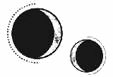

CAPÍTULO 21
Volver a abrir los ojos le supuso un gran esfuerzo. Helena se había despertado desorientada en una estancia opresiva, envuelta en sombras, después de haber pasado un largo tiempo inconsciente. Notaba la boca seca.
Al girar la cabeza, vio a Ferron junto a la doncella. Le hablaba entre susurros rápidos, como si intentara explicarle algo complicado.
Los párpados le pesaban y le daba vueltas la cabeza.
Cuando se obligó a abrir los ojos de nuevo, encontró la mirada fija de Ferron, mientras la necrómata estaba al otro lado de la habitación.
Tras superar el sobresalto inicial, comprendió que podría ponerse enferma con tan solo cruzar una mirada con él. Cerró los ojos con fuerza y se hizo un ovillo para protegerse cuando Ferron se acercó a ella.
—Tienes terminantemente prohibido autolesionarte o ponerte en riesgo de sufrir un aborto, ya sea espontáneo o inducido. A partir de ahora estarás vigilada día y noche para evitar que tu renovada desesperación por suicidarte te lleve a buscar formas aún más creativas de morir.
Pese a la aspereza de su tono, sonaba más cansado que amenazante.
Helena no respondió y esperó a que se marchara, después se encogió aún más, abrazándose el vientre. Sabía que la criatura que albergaba en su interior no era más que un cúmulo de células, pero pronto crecería y entonces ya no podría impedirlo.
Tras varios días sin levantarse de la cama, Ferron regresó.
—No puedes pasarte nueve meses ahí lloriqueando sin hacer nada —le dijo al entrar, aunque ella ni siquiera lo miró—. Tienes que comer y salir a tomar el aire.
Helena lo ignoró.
—Te he traído algo —dijo Ferron tras una pausa.
Helena notó que dejaba algo pesado sobre el edredón, así que echó un vistazo rápido y descubrió un libro voluminoso a su lado: La maternidad. Un estudio exhaustivo sobre la ciencia y la fisiología de la gestación.
—¿Y esto? —preguntó apartando la vista.
—Te vas a volver loca intentando encontrar las respuestas a todas las preguntas que seguramente te estarás haciendo —concluyó con resignación. Hizo una pausa, esperando una reacción por su parte—. Mañana te quiero fuera de esa cama.
Y, sin más, se marchó.
Cuando sus pisadas dejaron de oírse, Helena cogió el libro con la intención de tirarlo al suelo, pero vaciló y acabó apretándolo contra el pecho.
Al día siguiente, se levantó de la cama y se sentó junto a la ventana para aprovechar mejor la luz que entraba en la habitación. El libro estaba impecable: el lomo encuadernado en piel crujía al levantar la cubierta y las hojas todavía olían a aceite de máquina y tinta.
Era un libro de texto sobre medicina, no una guía pensada para explicarles a las amas de casa los detalles del embarazo de forma sencilla, sin tecnicismos ni términos médicos.
Cuando Ferron regresó, ya había leído unos cuantos capítulos.
Helena se aferró al libro de manera instintiva, pero él se limitó a observarla con atención.
—¿Cuánto hace que no sales?
—Sí que… he salido… —respondió ella bajando la vista.
No sabía durante cuánto tiempo retenían la información los necrómatas o si eran conscientes siquiera del paso de los días. Si le contaba una mentira, ¿tendría forma de saberlo?
—Fue la semana pasada.
—No es verdad. Llevas semanas sin salir.
Helena miró el libro y no se permitió pestañear hasta que el texto comenzó a desdibujarse. No quería salir, no quería ver la primavera ni oler el aroma del mundo lleno de vida.
—Ponte los zapatos. —Cuando la vio levantarse de la cama sin soltar el libro que abrazaba contra el pecho, él suspiró irritado—. No puedes llevártelo contigo. Pesa más de dos kilos.
Helena lo estrechó con más fuerza. Aparte de los zapatos y los guantes, el libro era su única posesión.
Ferron se masajeó las sienes como si tuviera migraña.
—Nadie te lo va a quitar. —Estaba haciendo todo lo posible por no perder la paciencia. Hizo un gesto a su alrededor—. ¿Quién se iba a molestar en robar un libro? Además, si desaparece, siempre puedo comprarte otro. Déjalo ahí.
Lo colocó con cuidado en la mesa y mantuvo la mano apoyada sobre la cubierta hasta que empezó a buscar sus botas.
El patio había renacido con la primavera. La hierba lo cubría todo y los árboles estaban salpicados de pequeños capullos carmesíes. A las enredaderas que trepaban por los muros de la casa les habían salido hojas de un intenso color verde y ya no parecían tan macabras como antes.
Helena no podía negar que era precioso, pero cada detalle del paisaje parecía viciado y venenoso.
Su acompañante dio un par de vueltas al patio con ella, sin decir una sola palabra antes de escoltarla de nuevo a su habitación.
—Ferron. —Se obligó a llamarlo con voz temblorosa cuando él ya se había dado la vuelta para dejarla sola.
Se detuvo en el pasillo y se giró despacio. Su expresión era indescifrable y su mirada precavida.
—Ferron —repitió apenas en un susurro. Le temblaba el mentón descontroladamente y tuvo que agarrarse a uno de los postes de la cama para mantenerse erguida—. J-jamás te volveré a pedir nada… —Al ver que la expresión de él se volvía fría e inexpresiva, algo se rompió en su interior, pero siguió hablando—: Haz conmigo lo que te plazca. No te pido que tengas compasión hacia mí, pero, por favor, no le hagas esto…
Ferron permaneció inmóvil, impasible.
—El… el bebé también será tuyo. No dejes que… —Se le rompió la voz—. Haré lo que me pidas… Te… te prometo que…
Pero ella no tenía nada que ofrecerle. El corazón le latía a toda velocidad y la voz se le entrecortó al quedarse sin aliento. Se arañó el pecho en un intento por tomar aire.
Un destello surcó la mirada de Ferron, que entró en la habitación y cerró la puerta a su espalda antes de acercarse a ella y agarrarla por los hombros. Mientras ella luchaba por respirar, él cargó prácticamente con todo su peso.
—Nadie le hará daño a tu bebé —dijo encontrando su mirada.
Helena soltó un jadeo de alivio. Estaba desesperada y con eso le bastaba.
Dejó caer la cabeza y el cabello le ocultó el rostro.
—¿De verdad? —Su voz estaba llena de desesperación.
—Te doy mi palabra de que no le pasará nada. Ahora, cálmate.
Qué promesa tan vacía. Suplicar no le serviría de nada. Ferron tenía muchos motivos para mentir, para decir lo que fuera necesario con tal de hacer que obedeciera sin rechistar, para inventar palabras tranquilizadoras pero huecas con las que mantenerla tranquila y dócil.
Se zafó de su agarre con una sacudida y dio un paso hacia atrás.
—Me vas a decir todo lo que quiera oír, ¿verdad? —dijo con voz temblorosa—. Supongo que es lo necesario con tal de mantenerme en un «entorno controlado». —Se abrazó a sí misma y se deslizó al suelo—. Te quiero fuera de mi vista. Solo haré ejercicio y comeré mientras no aparezcas por aquí.
Al día siguiente, salió al patio sola con la intención de ingerir la primera planta tóxica que encontrara. La primavera era la época idónea para ello. El jardín estaba tan crecido que seguro que encontraría alguna mata de vedegambre por ahí. Gateó entre los parterres ignorando los calambres en las manos y los brazos, pero, por mucho que buscó, no logró ver ninguna planta capaz de matarla o inducirle un aborto.
Incluso las flores de azafrán y las campanillas que estaba segura de haber visto habían desaparecido. Ni siquiera halló un mísero bulbo en los cúmulos de tierra suelta que habían dejado atrás al arrancarlos.
Salió todos los días, desesperada por encontrar algún brote que se le hubiera pasado por alto mientras los dolores de cabeza y las náuseas se volvían cada vez más frecuentes. Lo que había empezado siendo un dolor constante en la parte trasera del cráneo fue extendiéndose con cada hora que pasaba. Empeoró semana tras semana, hasta que el dolor se extendió a la vista y ya ni siquiera pudo leer.
Llegó un momento en que se vio obligada a mantener las pesadas cortinas de invierno echadas para que no entrara nada de luz en la habitación. Luego, dejó de comer y, tras pasar dos días sin salir de la cama, incapaz de ingerir o beber nada, Ferron volvió a visitarla.
—Me prometiste que comerías.
Ella resopló y un pinchazo le atravesó la cabeza de lado a lado, como si alguien le hubiera clavado una barra metálica, y la vista se le tiñó de rojo sangre. Un gemido de dolor se escapó de sus labios, sin ser capaz apenas de respirar hasta que cesó.
—Dudo que pueda retener algo en el estómago ahora mismo, incluso aunque la comida me resultara apetecible —dijo con voz tensa—. Encontrarse mal es algo normal durante las primeras semanas de embarazo. Ya se me pasará. La probabilidad estadística apunta a que sobreviviré.
Notó un cambio en el ambiente cuando Ferron se puso rígido, como si sus palabras lo hubieran pillado desprevenido.
—Mi madre estuvo a punto de perder la vida en el embarazo —confesó.
Helena sintió que aquel comentario revelaba algo importante sobre él, pero le dolía demasiado la cabeza como para ponerse a pensar en ello.
Ferron no se marchó. Seguía al lado de la cama cuando Helena cayó rendida por el sueño.
Unos días más tarde, regresó junto con Stroud.
—No creo que esté pagando ya el Estrago propio de la animancia —dijo a gritos la mujer al entrar en la habitación—. Lo normal es que no se manifieste hasta los últimos meses, pero, claro, ella era una sanadora. A lo mejor le queda menos vitalidad de la que imaginábamos.
Se detuvo junto a Helena, aunque ni siquiera la miró. Le quitó el edredón de encima y levantó su camisón para dejarle el vientre al descubierto sin molestarse en avisarla de lo que iba a hacer.
Helena se estremeció y Ferron desvió la mirada.
—Bueno, todavía es muy pronto, pero creo…
Stroud rebuscó en su bolsa y sacó una pantalla de resonancia que sostuvo con la mano izquierda mientras apoyaba la derecha sobre la parte baja de su abdomen. La resonancia de Stroud se filtró en su interior y el gas atrapado dentro del vidrio se transformó en una serie de formas nebulosas. En el espacio negativo que dejaban, se apreciaba algo pequeño que palpitaba tan rápido que casi parecía aletear.
Helena se lo quedó mirando, abrumada.
—Ahí está —dijo Stroud, complacida—. Vuestro heredero… No, perdón —se corrigió—, supongo que lo más acertado sería referirnos a la criatura como vuestra «progenie».
Ferron se había quedado blanco.
—Todo parece ir bien —añadió apartando la mano del vientre de Helena—. No detecto ninguna irregularidad. ¿Habéis comprobado el estado de su cerebro últimamente?
Él negó con la cabeza y Stroud chasqueó la lengua, pero asintió.
—Dadas las convulsiones que ha sufrido, lo mejor será no alterar su situación en este momento tan delicado. —Posó una mano sobre la cabeza de Helena para enviar una ola de resonancia mínima y esta se estremeció de dolor—. Si de verdad es una animante, sospecho que los dolores de cabeza son autoprovocados, así que no hay mucho que podamos hacer al respecto. Viendo el lado positivo, también cabe la posibilidad de que estimulen su cerebro y le devuelvan la memoria.
—¿Qué quieres decir con eso? —preguntó Ferron con suspicacia.
Stroud volvió a cubrir a Helena con el edredón.
—Si el Sumo Nigromante está en lo cierto, ella internaliza su resonancia para bloquear sus recuerdos, y todo apunta a que dedica una buena parte de su energía a mantener la barrera en pie, lo cual no es muy eficiente y explicaría lo aletargada que está siempre. Ahora que está embarazada, no tiene la fuerza suficiente para sustentarse, sobre todo si el embrión es también un animante. El Sumo Nigromante afirma que nació con un poder tan desmedido que consumió hasta la última gota de vida de su madre mientras todavía estaba en su útero y que nació cuando se disponían a quemar su cadáver en la pira funeraria. Tendremos que asegurarnos de mantenerla con vida. Con un poco de suerte, conseguiremos tanto al bebé como sus recuerdos antes de que sucumba al Estrago.
—¿Y por qué no me habías contado nada de esto hasta ahora? —La voz de Ferron era tan afilada como una cuchilla.
Stroud se encogió de hombros con incomodidad.
—Tampoco tengo mucha información al respecto. —Le lanzó una mirada maliciosa—. Deberíais preguntárselo a vuestro padre. Ya sabéis que aquí el experto es él.
Una expresión indescifrable surcó el rostro de Ferron.
—En este caso concreto, no creo que esté dispuesto a cooperar.
—Bueno, ahora mismo lo único que puedo hacer es ponerle una vía intravenosa.
Cuando Stroud se marchó, Ferron permaneció en la habitación.
Helena cerró los ojos. Por fin lo entendía: todos sabían que ella acabaría muriendo. Por eso, su única esperanza era perder la vida antes de que el embarazo fuera viable.
Pensó en el movimiento que había visto en el espacio negativo de la pantalla de resonancia y se le formó un nudo en el pecho. El corazón le latía como si llevara un rato corriendo.
Notó un peso en el colchón y unos dedos fríos que le rozaron la mejilla y le apartaron el pelo de la cara para tocarle la frente.
Unos días más tarde, un médico fue a visitarla y le colocó una vía en el brazo izquierdo. El paso de las horas quedó sujeto al incansable goteo de la solución salina y las medicinas que le administraban a través del frasquito de cristal.
Aunque las náuseas de la mañana parecieron mitigarse, los dolores de cabeza persistieron e, incluso, se volvieron más intensos. Helena apenas podía moverse. Una infinidad de médicos pasaron por su habitación para hacerle todo tipo de pruebas, pero ninguno fue capaz de darle algún consejo útil.
Cada vez que terminaban de examinarla y la dejaban sola, Ferron se sentaba al borde de la cama y le acariciaba el pelo. A veces le cogía la mano y movía los dedos distraídamente sobre los suyos. Después de que repitiera aquella rutina en un par de ocasiones, comprendió que se los estaba masajeando.
Siempre empezaba tocándole la palma de las manos, con cuidado de no doblarle las muñecas o moverle los grilletes, y, luego, iba subiendo hasta alcanzar la punta de cada dedo, nudillo a nudillo. Los masajes hacían que le temblaran menos las manos, así que no opuso resistencia, pero se convenció a sí misma de que no era algo que le resultara agradable.
Perdió peso, tanto que los grilletes quedaron lo bastante sueltos como para que pudiera ver dónde le perforaban la piel los conductos. La doncella que solía vigilarla empezó a mostrarse tan preocupada por ella que ni siquiera parecía una necrómata.
Revoloteaba a su alrededor todo el tiempo y, sin pronunciar palabra, le ofrecía tisanas de menta y jengibre, tazones de caldo y tostadas; también limpiaba su cuerpo con esponjas y le peinaba el cabello en una meticulosa trenza suelta para que no se le enredara. Para ser una doncella, resultaba extraño que fuera una cuidadora tan experimentada.
Ferron también empezó a orbitar a su alrededor. Todavía tenía que ausentarse para salir a cazar y encargarse de las tareas que Morrough le asignaba, pero pasaba mucho más tiempo en su habitación que antes. En más de una ocasión había ido a verla cubierto de suciedad, pues prefería asegurarse de que estaba viva antes de asearse.
Nunca hablaba ni se encontraba con su mirada, pero permanecía a su lado constantemente. A veces la acompañaba durante horas, sujetando una de sus manos entre las suyas, como si eso fuera a impedir que la joven se desvaneciera.
Stroud volvió a visitarla en un momento en que Helena apenas estaba consciente. Le oyó decir que no había esperado que sufriera el desgaste de la vivemancia tan temprano y que la culpa era de las barreras que la transmutación había creado en su cerebro. Además, se quejó de que era demasiado pronto para asegurar cierta viabilidad al embarazo.
Mencionaron a Atreus de nuevo.
Helena soñó que la luna iluminaba la estancia, pero en realidad su luz manaba de Ferron en vez de entrar por la ventana. Estaba sentado a su lado y sus ojos desprendían un misterioso brillo plateado. Había vuelto a cogerle la mano, pero, en aquella ocasión, se la había llevado hasta su pecho para que ella sintiera su pulso.
No podía evitar pensar que algo iba a suceder, pero finalmente nada cambió. La sensación de vacío que se le había abierto en las muñecas era un pozo sin fondo.
Se sentía como un reloj de arena cuyos últimos granos estaban a punto de caer. Casi se le había agotado el tiempo y notaba cómo la vida se le escapaba de entre los dedos.
La realidad dio un vuelco cuando alguien tiró de ella y la estrechó con fuerza.
—Quédate conmigo…, por favor…, quédate conmigo.
La luz se hizo más intensa y una sensación de lo más extraña se adueñó de Helena. Fue como si una chispa prendiera en su interior, una chispa que le resultaba familiar, pese a que estaba segura de no haber experimentado nada igual antes. Esa constante tirantez que notaba en el pecho, como si de una cuerda a punto de romperse se tratara, desapareció poco a poco.
Cerró los ojos, tomó con esfuerzo una bocanada de aire y el sueño se disipó por completo.
Helena se despertó sobresaltada, presa del pánico. Se incorporó sobre la cama y se tambaleó cuando la estancia comenzó a dar vueltas a su alrededor. Haciendo de tripas corazón, se arrancó la vía del brazo y se bajó de la cama con torpeza.
Tenía que hacer algo importante…
Las piernas estuvieron a punto de ceder al tocar el suelo, pero consiguió mantener el equilibrio. También ignoró el latigazo de dolor que le recorrió los brazos.
Sentía que tenía que hacer algo.
Pero ¿qué era?
No lograba recordarlo.
Estaba esperando. Debía estar preparada para…
Pese a que estaba segura de que las respuestas que buscaba se hallaban en la punta de la lengua, todavía se le escapaban.
«No te desmorones».
Había prometido…
¿Qué? ¿Qué había prometido? «Piensa, Helena».
Había llegado el momento de recordar. Se llevó las manos a las sienes.
Unos puntitos rojos le salpicaban la visión mientras el dolor crecía y crecía hasta ser más grande incluso que ella.
De pronto, tenía a Ferron delante.
—¿Qué estás…?
—Estoy esperando… —Clavó la mirada desencajada en él—. Prometí que esperaría…
El dolor le atravesó el cerebro de un extremo a otro y el mundo se partió en dos.
Cuando se le despejó la vista, Ferron seguía a su lado, pero el gris de sus ojos se había vuelto opaco y las sombras que envolvían la estancia le oscurecieron el pelo cuando se lanzó a por ella.
Helena retrocedió instintivamente y buscó a tientas algo que…
Pero Ferron se desvaneció.
La habitación se fragmentó.
Ilva Holdfast estaba de pronto sentada ante ella y la miraba con expresión tensa.
«Estamos perdiendo la guerra».
Antes de que tuviera oportunidad de contestar, Ilva había vuelto a esfumarse. Helena caía.
No…, no caía.
Ferron la sujetaba por el cuello y la golpeaba contra el suelo. La miraba con los ojos entornados.
Un torrente de agua fría le llenaba la boca.
Todo se volvió oscuro, gélido. Estaba sumergida. Veía a Luc, que se arañaba la garganta y al hacerlo provocaba unos surcos sanguinolentos en la piel.
«He cometido un error». Lila, que llevaba el pelo muy corto, lloraba hecha un ovillo contra la pared.
«¿No crees que merezco una recompensa? ¿Algo con lo que calentar este frío corazón?».
Un beso brusco durante el que se vio presionada contra una pared.
«Pareces satisfecha de haberte vendido como una puta barata».
La enfermera Pace la miraba por encima del hombro.
«La pérdida de Lila Bayard no será la única que sacudirá los cimientos de la Llama Eterna. Lo sabes, ¿verdad?».
«Eres mía. Juraste serlo». Alguien le había gruñido esas palabras al oído.
«Si consigues lo que te propones, me temo que acabarás destruyendo la Llama Eterna en lugar de salvarla». Jan Crowther, vivo de nuevo, la miraba con los ojos entornados por la rabia.
«Lo siento. Lo siento. Siento haberte hecho esto». Helena lloraba.
Cuando Ferron reapareció con el rostro rojo por completo de ira y ese sobrenatural brillo plateado iluminándole los ojos, el entorno de Helena se fragmentó.
«Te lo he advertido. Como te pase algo malo, me encargaré personalmente de reducir la Llama Eterna a cenizas. Y es una promesa, no una amenaza. Ten en cuenta que tu supervivencia es tan indispensable como la de Holdfast. Si tú mueres, mataré a todos los miembros de la Resistencia».
Fue como si estuviera cayendo. El pasado quedó libre, inundó su mente y se la tragó entera.